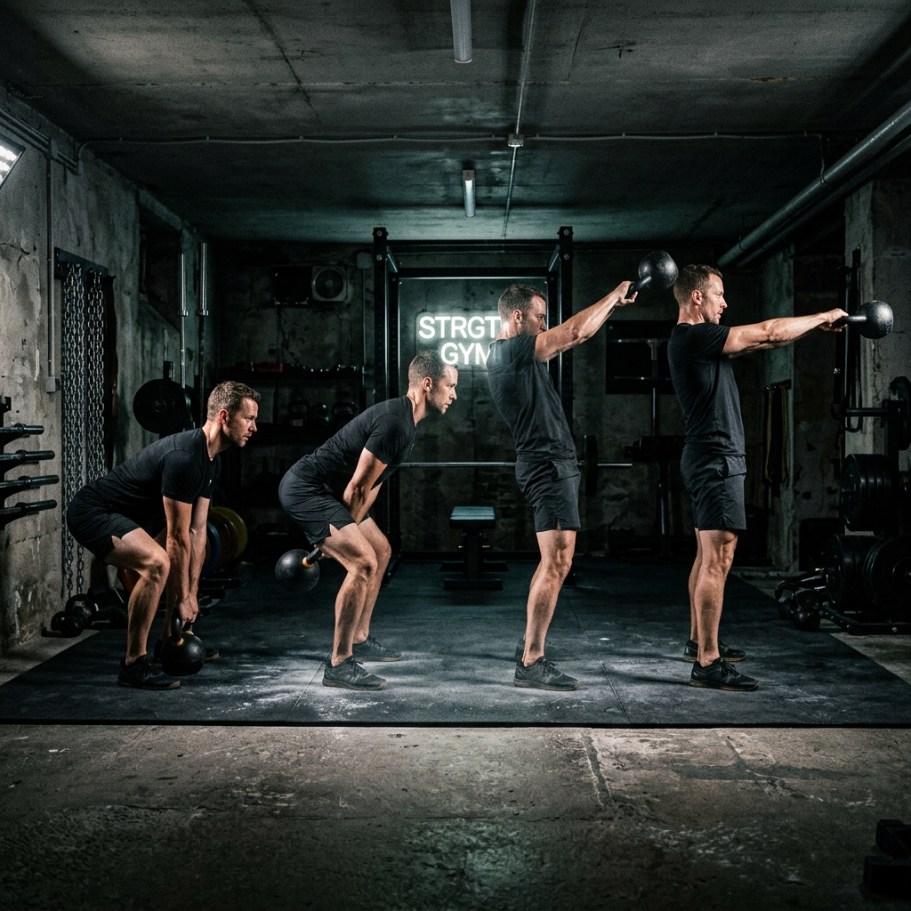

Kettlebell Swing
Muestra del efecto de Fotogramas Clave (Stop Motion) generado en vivo mediante CSS, rotando 3 imágenes consistentes de Inteligencia Artificial para crear la ilusión de movimiento continuo de baja carga.

Muestra del efecto de Fotogramas Clave (Stop Motion) generado en vivo mediante CSS, rotando 3 imágenes consistentes de Inteligencia Artificial para crear la ilusión de movimiento continuo de baja carga.